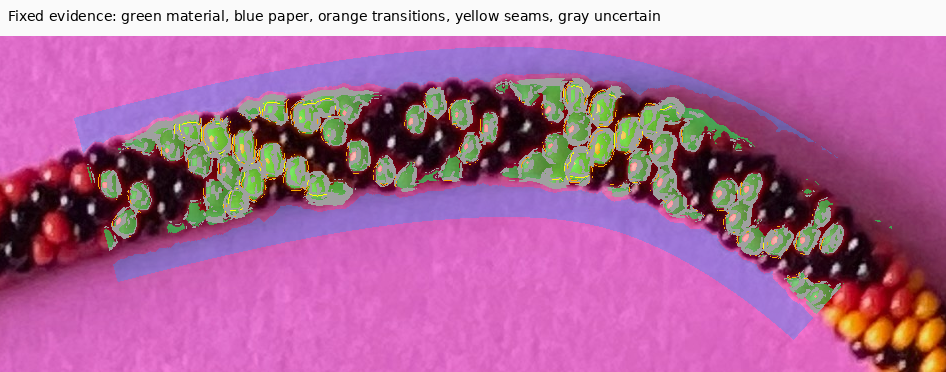
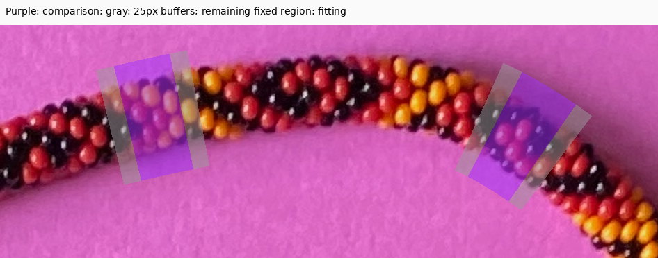
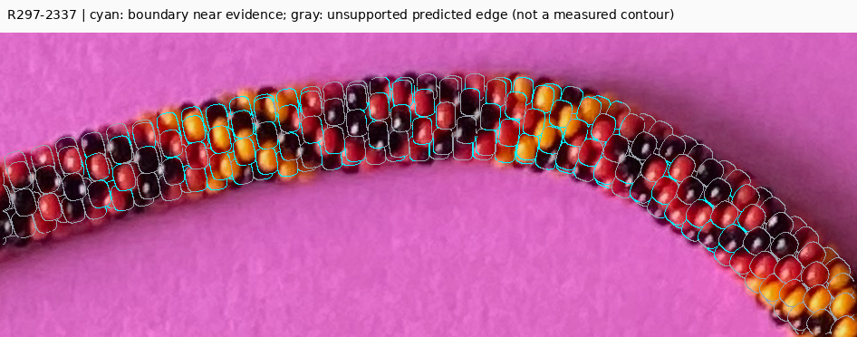
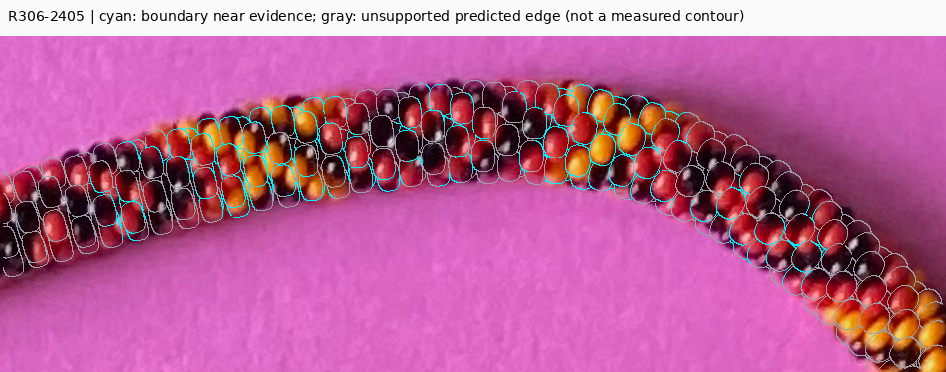
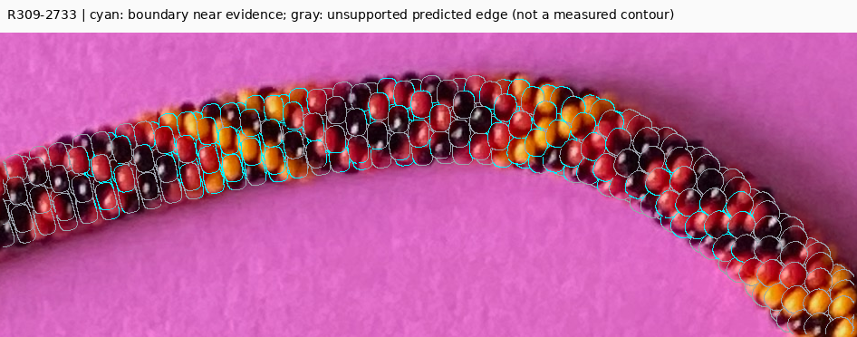
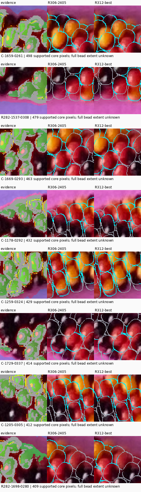
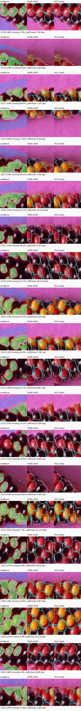
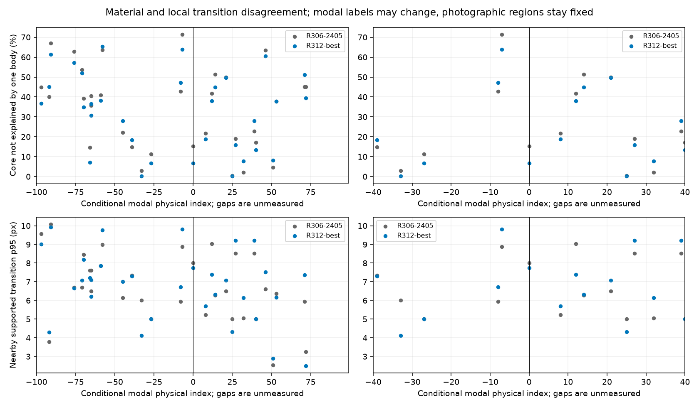

Original native photograph. No complete photographic bead contours or black silhouettes are inferred. Gray model edges lack nearby independent support; they are not validated. Orange/yellow photographic transitions are local evidence, not certified external contours or identities. Comparison regions have historical exposure. All necklace bodies occlude; exactly −100…99 are the target physical interval.
Report · Verification · Worst 20 locations and measured distances
| Model / set | Score | Material explained | Paper intrusion | One-body core | Transition p95 / max | Seam conflicts |
|---|---|---|---|---|---|---|
| R297-2337 / development | 1.748 | 84.5% | 0.00% | 69.5% | 8.1 / 11.4px | 24.4% |
| R297-2337 / comparison | 1.743 | 85.9% | 0.00% | 67.6% | 9.2 / 10.8px | 35.8% |
| R306-2405 / development | 1.725 | 90.0% | 0.15% | 69.8% | 8.0 / 10.8px | 43.1% |
| R306-2405 / comparison | 1.977 | 88.9% | 1.54% | 55.9% | 8.0 / 10.4px | 51.5% |
| R309-2733 / development | 1.886 | 87.6% | 0.11% | 62.8% | 9.2 / 12.2px | 44.2% |
| R309-2733 / comparison | 1.568 | 88.9% | 1.43% | 69.6% | 7.7 / 10.0px | 44.8% |
| R312-best / development | 1.694 | 89.8% | 0.19% | 71.0% | 8.1 / 10.8px | 44.7% |
| R312-best / comparison | 1.884 | 88.4% | 1.78% | 58.7% | 8.2 / 10.0px | 45.5% |







